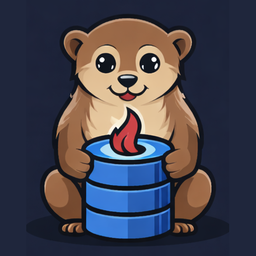
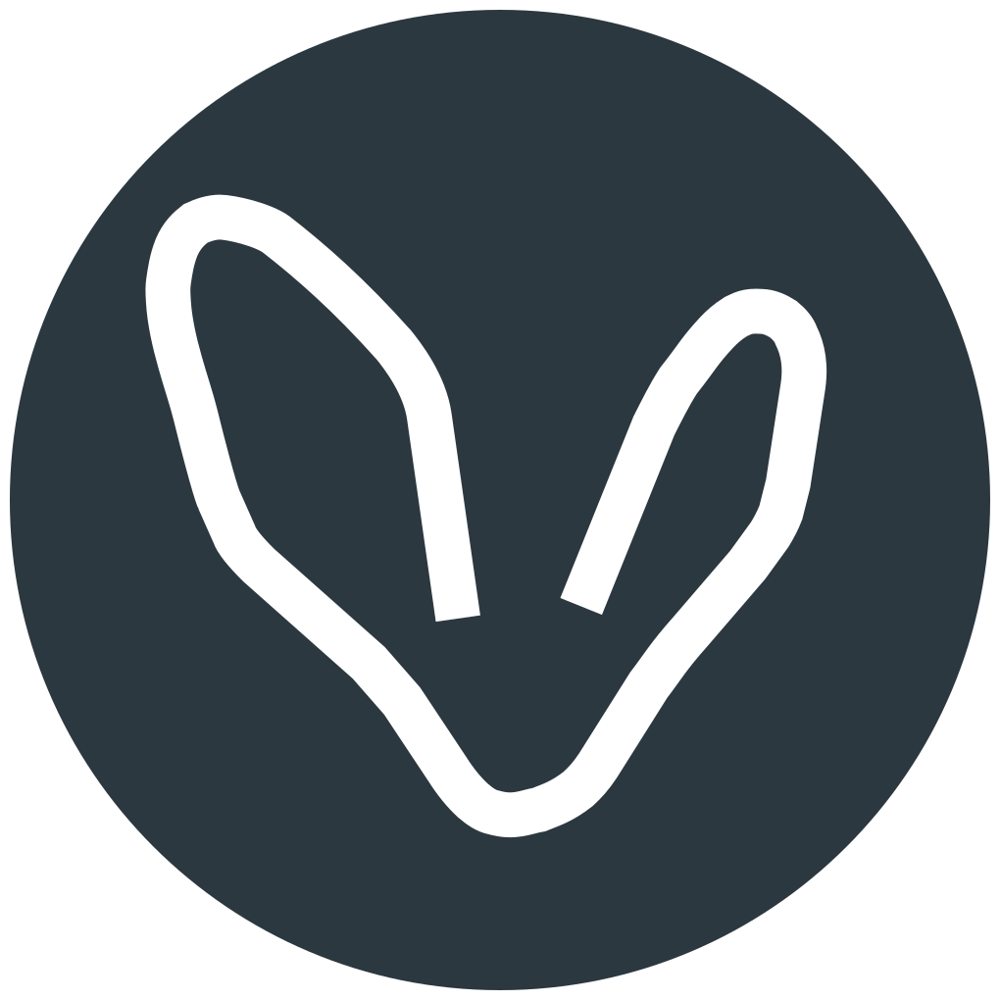
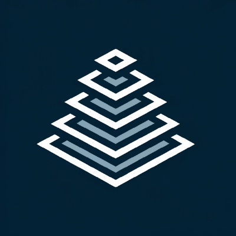

Open source projects
Each project owns its own path on sitenetsoft.org and publishes its own documentation there.
- /quarkus-tus experimental Quarkus extension for the tus resumable-upload protocol — client and server.
- /quarkus-pha in progress Quarkus extension for pha-kit — PatternFly, HTMX, and Alpine.js with Qute templates.
- /quarkus-vdp in progress Quarkus extension for the View Descriptor Protocol.
- /quarkus-topaz active Quarkus extension for the Topaz authorizer and directory — reactive gRPC client and Dev Service.
- /quarkus-libphonenumber in progress Quarkus extension for Google libphonenumber — injectable PhoneNumberUtil, a @PhoneNumber constraint and native image support.
- /htmx-ext-tus in progress HTMX extension for the tus client protocol.
-

/olinguito-odata4 upcoming OData 4 tooling — active development currently spread across branches. - /ai-skills active Public, tool-agnostic AI skill files for dev practices and writing.
- /resources active Shared images and other static files.
Family
Organizations in the SiteNetSoft family, each with its own projects and site.
-

-

View Descriptor Protocol
A standard integrating REST principles with dynamic view management.